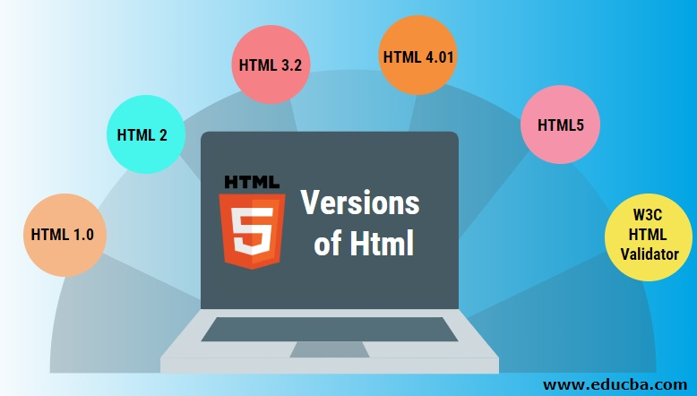
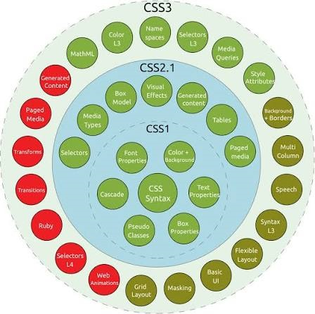
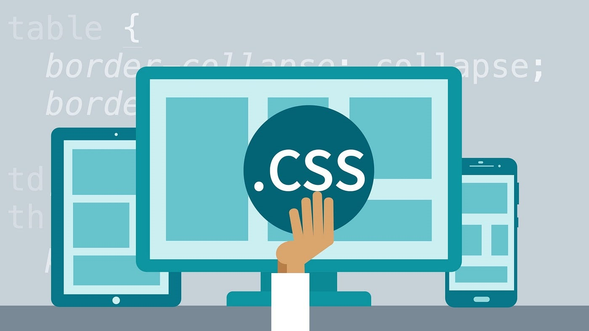
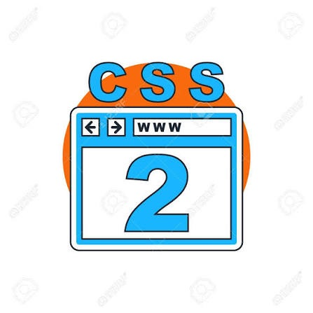
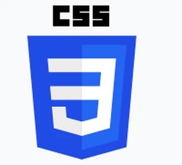

Evolution of HTML from HTML2.0 to HTML5
- HTML 2.0
- HTML 3.2
- HTML 4.01
- HTML 5
HTML 2.0

HTML 2.0 was made public in November 1995 by the Internet engineering task force
HTML 2.0 used the structure of head and body this is for the coder and those looking in to have a better idea of what's going on it adds some organization and it also allows for some more customisation you can add the code that you would not like to show to the user visually in the header along with the title and then have the body everything that the user can see
Libary of congress 2018
HTML 3.2
HTML 3.2 was made with lots of collaborators including Microsoft and sun microsystem and many others fun fact sun microsystems made the java programming language.
HTML 3.2 was continued to be updated and enhances with extentensions and many other features such as accessibility and style sheets.
HTML 3.2 introduced some new functions which you could use like tables which are helpful for displaying data in chunks and helps with readability. It also had backwards compatibility meaning you could use old HTML 2.0 code with this new HTML
W3C 2018
HTML 4.1
4.1 is a subversion of HTML 4.0 this still has all the features of the other versions of HTML
HTML 4 and 4.1 enhanced the style of websites integrating more style sheets into the websites which can be extremely helpful for customisation. The style element was also introduced which made styling much easier.
It had also made some accessibility features better which helped people with disability's The changes between HTML 4.1 and 4.0 are not too great allot of bug fixing and patches
libary of congress 2018
HTML 5
HTML 5 which was developed with two main contributors W3C and WHATWG the web hypertext application technology working group
HTML 5.1 was a upgraded version of HTML 5 in this version they fixed a critical error with HTML 5
HTML 5.1 was a mostly enhancing allot of features in the older versions allowing for backwards compatibility.
libary of congress 2018

The evolution of CSS from CSS 1.0 to CSS 3
| CSS | CSS 1 | CSS 2.0 | CSS 2.1 | CSS 3 |
| 1994 | 1996 | 1998 | 2011 | 2001 |
CSS
(Sahil Chhabra 2025)CSS stands for cascading style sheets and is used to style a HTML page by giving certain variables instructions like p {color: blue;} etc this is important for every webpage as they allow for allot more variety in styling
CSS was made in 1994 with W3C again making a massive contribution and the main people who spear headed this idea was "Hakon Wium lie and bertos" and "Bert bos" Hakon Wuim was the first to introduce the idea of CSS instead of only using HTML.
CSS was created to help with the coding aspect as well as making them more accessible and better transferable to different devices (Sahil Chhabra 2025)

CSS 1
(Sahil Chhabra 2025)CSS1 was released two years after CSS and was made public in December 1996 it introduced allot of features such as margins color background styling etc these are still standard for webpages today and were extremely helpful in web development for those who fully utilised it.

CSS 2
(Sahil Chhabra 2025)CSS 2 was an updated version of CSS 1 and added more features broadening the scope of what CSS could do the main functions were
According to Sahil Chhabra "Sophisticated selectors positioning capabilities media types" and then just expanding upon the original CSS 1.
CSS 2.1
(Sahil Chhabra 2025)CSS 2.1 was a update to CSS 2 and fixed some issues like errors and inconsistency's across CSS 2 it was not big enough to warrent a whole other version which is why its not called CSS 3 and finalized in 2011

CSS 3
(Sahil Chhabra 2025)CSS 3 was a major update to CSS this was when many new tools for creators to use this is one of the latest milestones in CSS and it truly shows the modification of CSS to the modern era of software and web designing a almost complete version of what CSS was created for with it now having designs that can fit smaller and bigger screens with different resolutions it was now far more accessible which is what one of the creators objectives was.
Tags
tags used and why underneath
Doctype
Doctype tells the computer what kind of document type it is so it knows what it should do and what langauge to use to read
html = "< html >"
html is also used to tell what kind of document it is
sections of the webpage = "< head >< body >"
head and body are used as sections for the website to read the body displays all the of what the user can see and the head keeps the data that you do not need to see
page title = "< title >"
page title is what the title of the website is going to be take for example mine is the evolution of HTML and CSS
Page and paragraph sections = "< p >"
Page and paragraphs are made up of p this is because the p stands for paragraph its what I used for most of the text you see on the webpage
header elements = "< h1,h2,h3>"
the header elements are there to be differnet from the paragraphs bigger and differently styled to help orgaise the page
Formatting elements = "< strong >"
Strong was not used
Data tables = "< table >" "< tr >" "< td >"
data tables are used to display my data in a table like format tr stands for table row and td stands for table data I used the table rows to make the headings almost and td as my paragraphs
lists = "< li >" "< ol >"
I used li lists to make a bullet point to make it easier to visually see and to add some style. the lo is used for my numerical lists
Images = "< img >"
the img stands for image and it is used to display images
Links = "< a >"
the links that you can click on to that take you to different parts for the website use a as a ahncor this anchor is a place which they go to with id since identification is the point and the ancor takes and stops you there
quotes = "< blockquote >"
quotes are used for when I was using some information from a source
meta = "< meta >"
Refrence
- HTML 2.0 libary of congress 2018 date acessed 26/September/2026: https://www.loc.gov/preservation/digital/formats/fdd/fdd000477.shtml?__cf_chl_tk=StT_Sc4nBpkPtfUJ7NBTFz_PEeBxi9NzzsESYbcRF3E-1790435591-1.0.1.1-QuDG0FbZiicdk6XSt4aJ1O1Wz1a84oOvFUU.rNhDfXo
- HTML 3.2 date acsessed 4/september/2026: https://www.w3schools.com/html/html_links.asp
- HTML 4.1 date acsessed 4/september/2026: https://www.loc.gov/preservation/digital/formats/fdd/fdd000480.shtml and https://html.sh/history/
- HTML5.0 date accsessed 4/september/2026 https://www.loc.gov/preservation/digital/formats/fdd/fdd000481.shtml and https://www.w3.org/TR/2021/SPSD-html51-20210128/
- Photo date accessed 10/10/2026 https://aravindblogg.wordpress.com/2023/07/05/history-of-html/
- Photo for html 5 date accsessed 06/10/2026: https://soltech.net/html-5-what-is-it-and-why-use-it/
- Photo for CSS 1 date acccsessed 15/10/2026:https://medium.com/@anupamroy8/introduction-to-css-cascading-style-sheets-c31e6641260a
- Photo for CSS2 date accsessed 15/10/2026: https://www.123rf.com/photo_52459353_css-2-icon.html
- Photo for history of CSS date accsessed 15/10/2026https://www.shecodes.io/challenge_submissions/197698/embed
- Information about CSS Sahil Chhabra 2025: date accessed 11/10/2026: https://www.geeksforgeeks.org/css/css-history-versions/
- link colors hover colors and active colors etc are all from w3 schools accsessed on the 27/09/2026: https://www.w3schools.com/Html/tryit.asp?filename=tryhtml_links_colors
- Photo for history of html date accsessed 15/10/2026: https://www.educba.com/versions-of-html/